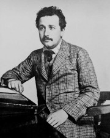

Albert Einstein var en judisk, tysk-amerikansk fysiker som bland annat skapade den s.k. relativitetsteorin. Han föddes i Tyskland men flyttade till USA på 1930-talet efter att nazisterna hade tagit makten i hans hemland. Einsteins forskning bidrog till utvecklingen av "kärnklyvning" som ledde till skapandet av atombomben. Einsteins banbrytande teorier och forskning har gjort honom till en av världens mest kända vetenskapsmän genom tiderna.
Albert Einstein föddes den 14 mars 1879 i Ulm i södra Tyskland som son till Hermann Einstein och Pauline Koch. 1880 flyttade familjen till München där Albert senare gick i skola. Han var en drömmare och inte speciellt intresserad i skolan, och en lärare skall ha sagt: "Det blir aldrig något av dig, Einstein".
Efter två år i skola i Aarau i Schweiz tog han där studenten och började sedan 1896 studera vid ETH i Zürich (Zürich tekniska högskola). Han var tvungen att göra två intagningsprov innan han klarade av att komma in på skolan överhuvudtaget. Fyra år senare lämnade han skolan som lärare i matematik och fysik, och tjänstgjorde sedan i två år som gymnasielärare.
Vid nitton års ålder (1898) träffade han ungerskan Mileva Maric som också var matematiker. De fick en dotter i januari 1902, som dom adopterade bort, och i januari året därpå gifte dom sig. I maj 1904 fick de en son som fick namnet Hans Albert och 1910 kom den andra sonen, Edouard.
Mellan åren 1901-1909 jobbade han på patentverket i Bern i Schweiz. Om den tiden sa han själv flera år senare att det var hans lyckligaste tid. Tjänsten gav honom nämligen tid till att utarbeta tre artiklar som gavs ut 1905. Den första handlade om den brownska rörelsen där han i praktiken bevisade "atomerna och molekylernas" existens. Den andra artikeln handlade om fotoelektriska effekten, för vilken han fick nobelpriset i fysik 1921, och den tredje var den speciella relativitetsteorin, för vilken han kanske är mest berömd. Kort efter att han publicerat sina idéer om mätning av relativa avstånd utvidgade han sitt arbete till att även omfatta massa. Ett av hans resultat blev världens mest berömda ekvation, som vanligen skrivs e = mc2.
Vid trettio års ålder (1909) lämnade han patentverket och tjänstgjorde sedan några år som professor i Zürich och Prag innan han 1914 blev chef för Kaiser Wilhelm-institutet för fysik i Berlin. Einsteins var pacifist (en som är mot krig och våld) och när första världskriget bröt ut gjorde hans inställning det otrevligt både för myndigheter och kollegor. 1916-17 publicerade han sin allmänna relativitetsteori. Den utgör en logisk fortsättning på den "speciella relativitetsteorin" (som kom 1905).
Under 1930-talet ökade judeförföljelsen i Tyskland och vid Hitlers maktövertagande 1933 var Einstein med sin judiska bakgrund tvungen att lämna Tyskland. Han avsade sig då också sitt tyska medborgarskap. Han emigrerade till USA där han 1940 blev amerikansk medborgare. I Amerika började han som professor vid "Institue for advanced studies" i Princeton. På den platsen blev han sedan till sin död.
Strax före krigsutbrottet 1939 hade man upptäckt uranklyvningen, fissionen. Några andra forskare som befarade att Hitler skulle låta starta ett vapenprojekt och börja tillverka atombomber, lyckades få Einstein att skriva ett varnande brev till den amerikanska presidenten Roosevelt och kräva ett amerikanskt atomprogram. Det blev Manhattanprojektet, som ledde till atombomberna som senare fälldes över Hiroshima och Nagasaki i Japan. Einstein deltog inte i själv i arbetet på bomberna, utan han motsatte sig att de användes, och blev efter kriget en ihärdig fiende mot kärnvapnen.
År 1948 blev han erbjuden att bli Israels första president, vilket han tackade nej till. Skälet han hade var att han var "inkapabel att handskas med människor". Han dog den 18 april 1955 på ett sjukhus i Princeton, New Jersey, USA, 76 år gammal. År 1999, 44 år efter sin död, blev han av Time Magazine utsedd till "Person of the Century" (århundradets person). Översta bilden visar Einstein som vaxdocka på Madame Tussauds vaxkabinett i London.
Även om Albert Einsteins upptäckter lett till ett stort antal viktiga tekniska framsteg och uppfinningar inom en rad områden var han inte själv uppfinnare utan teoretisk fysiker och hans bidrag utgörs främst av hans revolutionerande vetenskapliga teorier. Den enda uppfinning som patenterades av Einstein var ett kylskåp. Einsteins kylskåp, som han uppfann 1926 tillsammans med sin före detta student Leo Szilard, är ett så kallat absorptionskylskåp som drivs av en värmekälla och som inte har några rörliga delar. Einsteins första vetenskapliga upptäckt presenterades 1905, då Einstein var 26 år gammal, i hans doktorsavhandling. I doktorsavhandlingen beskrivs en ny teoretisk metod för att bestämma molekylers radier och Avogadros tal, som anger antalet molekyler i en viss mängd materia. Samma år publicerade Einstein även flera andra vetenskapliga artiklar, som alla kom att få stor betydelse för den moderna fysiken. Han förklarade det fenomen som kallas för Brownsk rörelse, vilket hjälpte till att bevisa existensen av atomer och molekyler, han förklarade den fotoelektriska effekten genom att föreslå att ljus både kan uppträda som elektromagnetiska vågor och partiklar, han lade fram den speciella relativitetsteorin och han avslöjade med den kända formeln E = mc2 sambandet mellan massa och energi.
Isaac Newton formulerade tre lagar om rörelse i 1687. Newton förändrade hur individer såg på universum. Den första lagen säger att ett objekt som är i rörelse förblir i rörelse tills den stoppas av en yttre kraft. Den andra lagen står att ett föremåls massa och dess acceleration är relaterade till den pålagda kraften. Så kraften är lika med massan gånger accelerationen. Den tredje lagen anger att för alla åtgärder finns en motsatt och lika reaktion.
John Dalton visade att det fanns små partiklar som kallas atomer som bygger upp de olika delarna. En ren element kommer att innehålla samma antal atomer som innehåller samma massa. Olika delar kan kombineras för att bilda nya föreningar. Han gjorde denna upptäckt 1808.
År 1868 publicerade Charles Darwin sin berömda bok, "På arternas uppkomst genom naturligt urval. "Darwin utmanade den nuvarande övertygelser av tiden om att skapa liv. Han baserade boken på observationer vid servering som en naturalist på HMS Beagle. Merparten av prover från Galapagos Island gav inspiration till denna berömda teori om det naturliga urvalet .